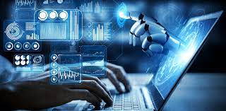
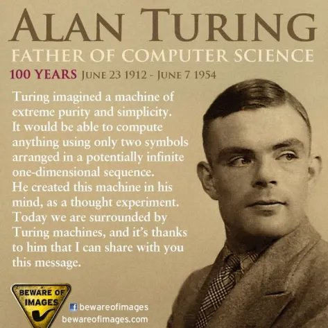
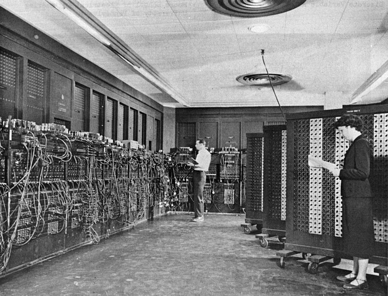

COMPUTER SCIENCE

What is Computer Science?
Computer Science is the study of computers and computational systems. Unlike electrical and computer engineers, computer scientists deal mostly with software and software systems; this includes their theory, design, development, and application.
Principal areas of study within Computer Science include artificial intelligence, computer systems and networks, security, database systems, human computer interaction, vision and graphics, numerical analysis, programming languages, software engineering, bioinformatics and theory of computing.
Although knowing how to program is essential to the study of computer science, it is only one element of the field. Computer scientists design and analyze algorithms to solve programs and study the performance of computer hardware and software. The problems that computer scientists encounter range from the abstract-- determining what problems can be solved with computers and the complexity of the algorithms that solve them – to the tangible – designing applications that perform well on handheld devices, that are easy to use, and that uphold security measures.
FATHER OF COMPURER SCIENCE:

Alan Turing
Often considered the father of modern computer science, Alan Turing was famous for his work developing the first modern computers, decoding the encryption of German Enigma machines during the second world war, and detailing a procedure known as the Turing Test, forming the basis for artificial intelligence.
History of computer

The earliest foundations of what would become computer science predate the invention of the modern digital computer. Machines for calculating fixed numerical tasks such as the abacus have existed since antiquity, aiding in computations such as multiplication and division. Algorithms for performing computations have existed since antiquity, even before the development of sophisticated computing equipment.[17]
Wilhelm Schickard designed and constructed the first working mechanical calculator in 1623.[18] In 1673, Gottfried Leibniz demonstrated a digital mechanical calculator, called the Stepped Reckoner.[19] Leibniz may be considered the first computer scientist and information theorist, because of various reasons, including the fact that he documented the binary number system. In 1820, Thomas de Colmar launched the mechanical calculator industry[note 1] when he invented his simplified arithmometer, the first calculating machine strong enough and reliable enough to be used daily in an office environment. Charles Babbage started the design of the first automatic mechanical calculator, his Difference Engine, in 1822, which eventually gave him the idea of the first programmable mechanical calculator, his Analytical Engine.[20] He started developing this machine in 1834, and "in less than two years, he had sketched out many of the salient features of the modern computer".[21] "A crucial step was the adoption of a punched card system derived from the Jacquard loom"[21] making it infinitely programmable.[note 2] In 1843, during the translation of a French article on the Analytical Engine, Ada Lovelace wrote, in one of the many notes she included, an algorithm to compute the Bernoulli numbers, which is considered to be the first published algorithm ever specifically tailored for implementation on a computer.[22] Around 1885, Herman Hollerith invented the tabulator, which used punched cards to process statistical information; eventually his company became part of IBM. Following Babbage, although unaware of his earlier work, Percy Ludgate in 1909 published[23] the 2nd of the only two designs for mechanical analytical engines in history. In 1914, the Spanish engineer Leonardo Torres Quevedo published his Essays on Automatics,[24] and designed, inspired by Babbage, a theoretical electromechanical calculating machine which was to be controlled by a read-only program. The paper also introduced the idea of floating-point arithmetic.[25][26] In 1920, to celebrate the 100th anniversary of the invention of the arithmometer, Torres presented in Paris the Electromechanical Arithmometer, a prototype that demonstrated the feasibility of an electromechanical analytical engine,[27] on which commands could be typed and the results printed automatically.[28] In 1937, one hundred years after Babbage's impossible dream, Howard Aiken convinced IBM, which was making all kinds of punched card equipment and was also in the calculator business[29] to develop his giant programmable calculator, the ASCC/Harvard Mark I, based on Babbage's Analytical Engine, which itself used cards and a central computing unit. When the machine was finished, some hailed it as "Babbage's dream come true".[30]
During the 1940s, with the development of new and more powerful computing machines such as the Atanasoff–Berry computer and ENIAC, the term computer came to refer to the machines rather than their human predecessors.[31] As it became clear that computers could be used for more than just mathematical calculations, the field of computer science broadened to study computation in general. In 1945, IBM founded the Watson Scientific Computing Laboratory at Columbia University in New York City. The renovated fraternity house on Manhattan's West Side was IBM's first laboratory devoted to pure science. The lab is the forerunner of IBM's Research Division, which today operates research facilities around the world.[32] Ultimately, the close relationship between IBM and Columbia University was instrumental in the emergence of a new scientific discipline, with Columbia offering one of the first academic-credit courses in computer science in 1946.[33] Computer science began to be established as a distinct academic discipline in the 1950s and early 1960s.[7][34] The world's first computer science degree program, the Cambridge Diploma in Computer Science, began at the University of Cambridge Computer Laboratory in 1953. The first computer science department in the United States was formed at Purdue University in 1962.[35] Since practical computers became available, many applications of computing have become distinct areas of study in their own rights.